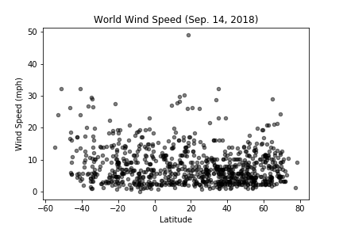

Latitude vs. Wind Speed

There is no general latitude dependence found in wind speed measurements. We do tend to observe wind speeds below 20 mph, though we see that the most southerly cities tend to have higher than average wind speeds. Apparently, this may be explained by the relative lack of land at these more southern latitudes that fail to break wind speeds as occurs in similar latitudes in the northern hemisphere. As a primer for the science of terrestial wind patterns, Wikipedia seems to actually be a decent beginning. One unusual observation that also stands out is that one city was experiencing winds of nearly 50 mph, which are tropical storm strength winds, though below hurricane strength. For reference, see here.